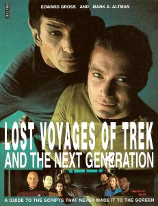

Lost Voyages of Trek and The Next Generation

AUT
Edward Gross
Mark A. Altman
PAG
110
EDI
Boxtree, 1995
ISBN
0-7522-0868-3
Guida alle storie che non sono mai arrivate sul piccolo e sul grande schermo.